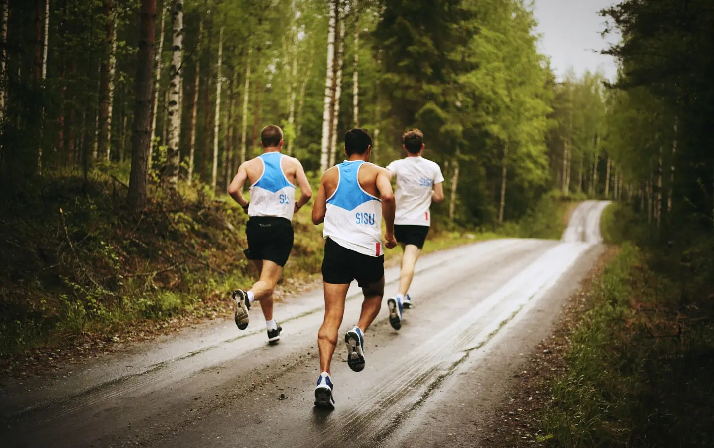

Finnish runners prepping for the Boston MarathonFlying Finn, Villa Ritola in the 1924 Paris OlympicsUltrarunner Noora HonklaThe champions of the 1972 Boston Marathon: Olavi Suomalainen of Finland and Nina Kuscsik of the United StatesTrail running in Finland is one of a kindFinnish runner Lasse Viren lost to Steve Prefontaine in Steve's final race

Karhu's training campFinnish and Swedish running teams training at a camp in Rovaniemi